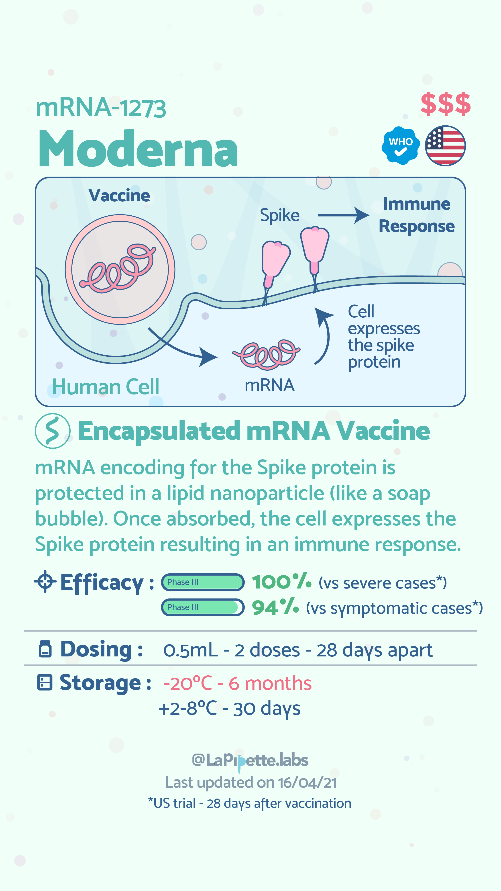
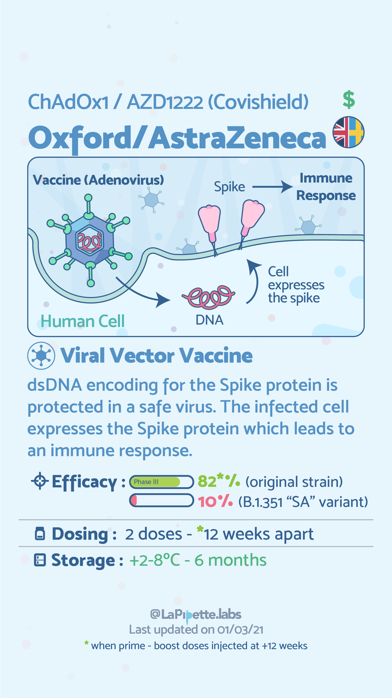
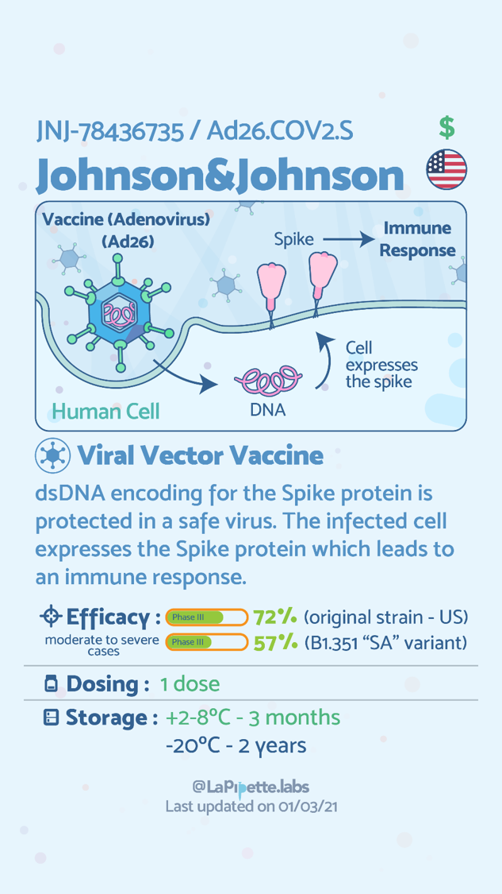
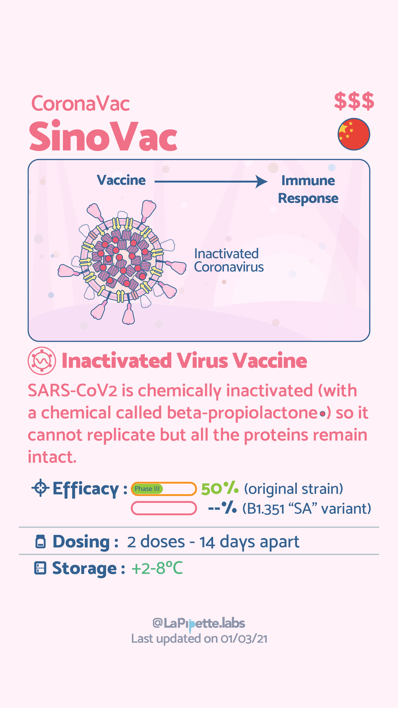
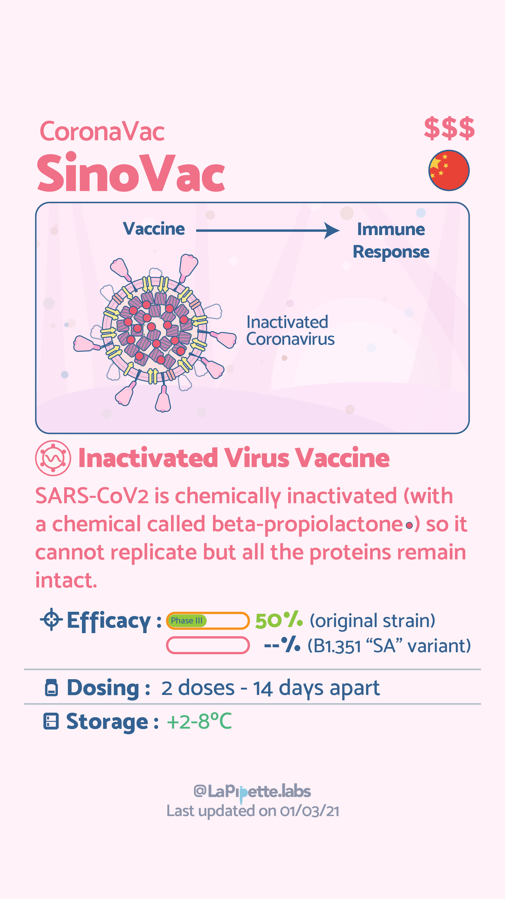
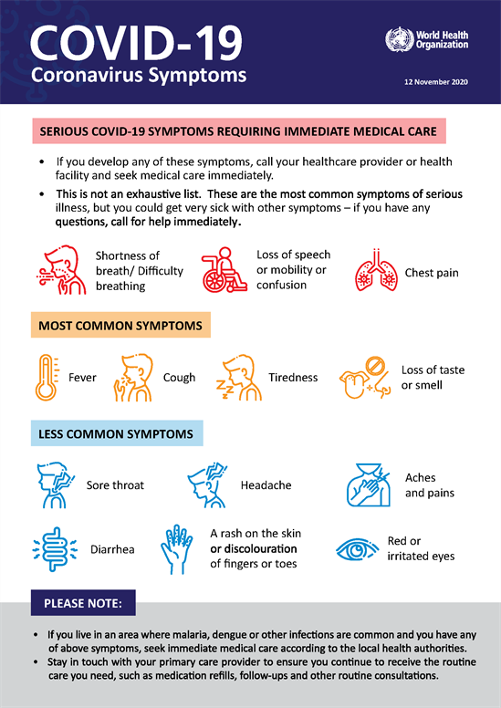
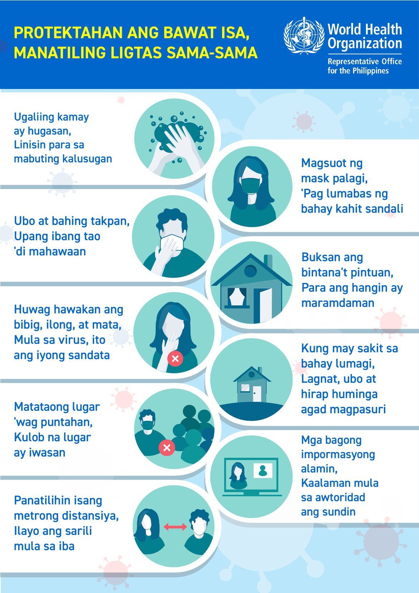

Menu
COVID-19
Coronavirus disease (COVID-19) is an infectious disease caused by the SARS-CoV-2 virus.
Most people infected with the virus will experience mild to moderate respiratory illness and recover without requiring special treatment. However, some will become seriously ill and require medical attention. Older people and those with underlying medical conditions like cardiovascular disease, diabetes, chronic respiratory disease, or cancer are more likely to develop serious illness. Anyone can get sick with COVID-19 and become seriously ill or die at any age.
The best way to prevent and slow down transmission is to be well informed about the disease and how the virus spreads. Protect yourself and others from infection by staying at least 1 metre apart from others, wearing a properly fitted mask, and washing your hands or using an alcohol-based rub frequently. Get vaccinated when it’s your turn and follow local guidance.
The virus can spread from an infected person’s mouth or nose in small liquid particles when they cough, sneeze, speak, sing or breathe. These particles range from larger respiratory droplets to smaller aerosols. It is important to practice respiratory etiquette, for example by coughing into a flexed elbow, and to stay home and self-isolate until you recover if you feel unwell.
Visit WHO site for more info...Delta Variant
The Delta variant is a variant of the COVID-19 virus. Delta variant is the common name used to refer to what is technically known as the B.1.617.2 variant.
A variant of a virus is a new strain that has emerged due to a mutation (or mutations) in the virus’s genetic structure.
The Delta variant is a more contagious variant of the COVID-19 virus that spread rapidly after its emergence.
Use of the name Delta variant became widespread in news reports and public health communications in the spring and summer of 2021 as experts warned that it posed a severe public health threat, especially to unvaccinated populations.
As of October 22, 2021, the delta variant has reached more than 178 countries. It’s already overtaken the alpha variant in number of cases in many of those countries, including the U.S. The variant is thought to be 55% to 90% more transmissible than previous COVID-19 variants. Experts believe delta is anywhere from 30% to 100% more infectious than alpha. Researchers are still unsure why the delta variant is so much more transmissible than others. They think changes in the variant’s protein might make it easier to enter human cells. Another early study suggests that a mutation in the delta variant might help it blend better with human cells once it attaches itself. If it can easily blend with your cells, it’s able to infect more of them and overpower your immune system. It seems to affect younger people more often. In the United Kingdom, studies showed that children and adults under 50 were 2.5 times more likely to become infected. Symptoms appear to be more severe and happen faster. People may be more likely to end up in the hospital if they have the delta variant. Studies suggest it might have almost double the risk of hospitalization than the alpha variant. In China, doctors say patients with the delta variant are sicker than those they treated early in the pandemic. And their condition seems to go downhill much faster.
Visit WebMD site for more info...COVID VACCINES
   

Symptoms
Mga Dapat Gawin
